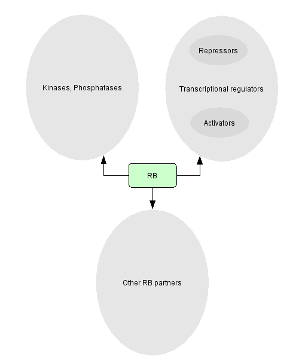

RB has been found to associate with many partners, either activating or repressing them.
According to Morris and Dyson (2001, Adv Cancer Res. 82:1-54.), these proteins can be divided in three groups:

To obtain a list of the different factors, click on the corresponding box.